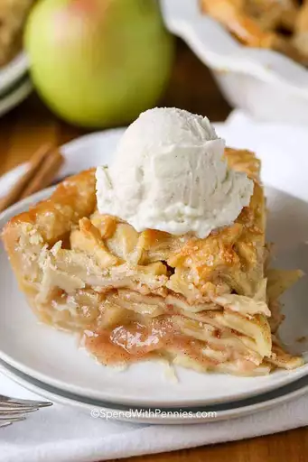

Apple Pie

A delicious apple pie recipe that will heal your soul and warm your heart.
This is a homemade apple pie recipe that will be made using a double crust dough and fresh Granny Smith apples.
Prep Time: 30 mins Cook Time: 1 hr
Ingredients List:
- for double-crust pie
- 1\3 cup sugar
- 1\3 cup packed brown sugar
- 1\4 cup all-purpose flour
- 1 teaspoon ground cinnamon
- 1 tablespoon lemon juice
- 1 tablespoon butter
- 1\4 teaspoon ground nutmeg
- 6 to 7 cups thinly sliced peeled tart apples
- 1 large egg white
Directions
-
Preheat oven to 375°. On a lightly floured surface,
roll half the dough to a 1/8-in.-thick circle;
transfer to a 9-in. pie plate.
Chill while preparing filling.
In a small bowl, combine sugars,
flour and spices. In a large bowl,
toss apples with lemon juice.
Add sugar mixture; toss to coat.
Add filling to crust; dot with butter.
-
Roll remaining dough to a 1/8-in.-thick circle.
Place over filling. Trim, seal and flute edge.
Cut slits in top.
Beat egg white until foamy;
brush over crust. If desired,
prinkle with turbinado sugar and ground cinnamon.
-
Bake on the lowest rack 60-70 minutes, until crust is
golden brown and filling is bubbly, covering with foil
halfway if crust begins to get too dark. Cool on a wire
rack. If desired, serve with ice cream and caramel sauce.